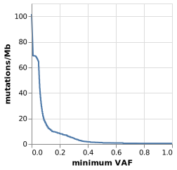

In order to judge about candidate indel and structural variants, Varlociraptor needs to know about certain properties of the underlying sequencing experiment in combination with the used read aligner.
This includes the maximum feasible softclip size of the aligner, the insert size of the sequencing library, the expected amounts of homopolymer errors and the probabilities of opening and extending gaps.
While Varlociraptor is able to estimate these on the fly, it is recommended to perform this estimation per sample before processing variant calls, in order to save time upon repeated runs or during parallelization.
Given that the sample is given as a sorted (by position) BAM file sample.bam, estimation can be performed as
varlociraptor estimate alignment-properties reference.fa --bam sample.bam > sample.alignment-properties.json
By default, varlociraptor uses all suitable alignments in the provided file, use --num-records NUM to restrict the number of alignments used.
The alignment properties can then be passed on to varlociraptor preprocess variants, see Calling variants.
Varlociraptor enables an uncertainty aware computation of the mutational burden (or tumor mutational burden (TMB) in a tumor context). Mutational burden is usually defined as the number of non-synonymous coding mutations per megabase of the measured coding genome (in tumor context restricted to e.g. somatic mutations). With
varlociraptor estimate mutational-burden --coding-genome-size 3e7 --sample tumor ---events SOMATIC_TUMOR < calls.annotated.bcf > tmb.vl.json
Varlociraptor will produce a Vega-Lite specification of a plot, where the x-axis depicts the
minimum alteration fraction (here variant allele frequency/allelic fraction), and the y-axis shows the mutational burden in mutations per megabase.
The input file calls.annotated.bcf has to be a VCF/BCF file that has been obtained from Varlociraptor and annotated with e.g. SnpEff, such that Varlociraptor can select non-synonymous coding mutations.
The vega specification is a text file in JSON format, that can be converted to e.g. an SVG image via the Vega-Lite command line utilities:
vl2svg tmb.vl.json tmb.svg
Note that the coding genome size given with --coding-genome-size has to reflect the measured part of the coding genome.
In case the estimation is conducted on e.g. panel sequencing (where only a small number of genes is captured), the value has
to be the size of the coding genome within this capturing.
After using vl2svg for conversion of the JSON to an image, the result can look like this:

Importantly, the mutational burden is calculated as expected value over the posterior probabilities for each variant to be of the event of interest (e.g. somatic). Hence, the mutational burden estimate properly considers the uncertainty in the data. Moreover, as we show a mutational burden estimate for each minimum alteration fraction, it becomes possible to reason e.g. over the clonal structure of a tumor, instead of considering only a single overall number. We expect this to increase the predictive power of mutational burden analyses.